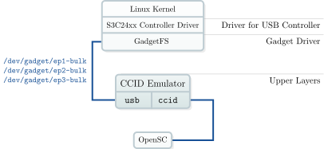

USB CCID Emulator¶
The USB CCID Emulator forwards a locally present PC/SC smart card reader as a standard USB CCID reader. USB CCID Emulator can be used as trusted intermediary enabling secure PIN entry and PIN modification. In combination with OpenSC [2] also PACE can be performed by the emulator.

Portable smart card reader with trusted user interface
If the machine running ccid-emulator is in USB device mode, a local reader is forwareded via USB to another machine. If in USB host mode, the USB CCID reader will locally be present.
Applications on Windows and Unix-like systems can access the USB CCID Emulator through PC/SC as if it was a real smart card reader. No installation of a smart card driver is required since USB CCID drivers are usually shipped with the modern OS.
Here is a subset of USB CCID commands supported by the USB CCID Emulator with their PC/SC counterpart:
USB CCID |
PC/SC |
|---|---|
|
|
|
|
|
|
PIN verification/modification and PACE can also be started by the application
transmitting (SCardTransmit) specially crafted APDUs. Only the alternative
initialization of PACE using SCardControl requires patching the driver
(available for libccid, see patches). The pseudo APDUs with no need for
patches are defined as follows (see BSI TR-03119 1.3 [7] p. 33-34):
Command APDU |
Response APDU |
||||||
|---|---|---|---|---|---|---|---|
CLA |
INS |
P1 |
P2 |
Command Data |
Response Data |
SW1/SW2 |
|
GetReaderPACECapabilities |
|
|
|
|
(No Data) |
|
|
EstablishPACEChannel |
|
|
|
|
|
|
|
DestroyPACEChannel |
|
|
|
|
(No Data) |
(No Data) |
|
Verify/Modify PIN |
|
|
|
|
Coding as |
Coding as |
|
The USB CCID Emulator is implemented using GadgetFS [1]. Some fragments of the source code are based on the GadgetFS example and on the source code of the OpenSC tools.

Software stack of the USB CCID Emulator running on the OpenMoko Neo FreeRunner
Whereas using the USB CCID Emulator on the host system as smart card reader only needs a usable PC/SC middleware with USB CCID driver. This is the case for most modern Windows and Unix-like systems by default.

Implementation of a mobile smart card reader for the German ID card
Download¶
You can find the latest release of USB CCID Emulator on Github. Older releases are still available on Sourceforge.
Alternatively, you can clone our git repository:
git clone https://github.com/frankmorgner/vsmartcard.git
cd vsmartcard
git submodule update --init --recursive
Installation¶
Installation on Linux, Unix and similar¶
The USB CCID Emulator uses the GNU Build System to compile and install. If you are
unfamiliar with it, please have a look at INSTALL. If you can not find
it, you are probably working bleeding edge in the repository. To generate the
missing standard auxiliary files you need to additionally install libtool and
pkg-config and run the following command in ccid-emulator:
autoreconf --verbose --install
To configure (configure --help lists possible options), build and install the USB CCID Emulator now do the following:
./configure
make
make install
The USB CCID Emulator depends on libopensc, which is automatically built from a snapshot of the OpenSC [2] source code and then statically linked.
Running the USB CCID Emulator has the following dependencies:
Hints on GadgetFS¶
To create a USB Gadget in both USB host and USB client mode, you need to load the kernel module gadgetfs. Here is how to get a running version of GadgetFS on a Debian system (see also OpenMoko Wiki [6]):
sudo apt-get install linux-source linux-headers-`uname -r`
sudo tar xjf /usr/src/linux-source-*.tar.bz2
cd linux-source-*/drivers/usb/gadget
# build dummy_hcd and gadgetfs
echo "KDIR := /lib/modules/`uname -r`/build" >> Makefile
echo "PWD := `pwd`" >> Makefile
echo "obj-m := dummy_hcd.o gadgetfs.o" >> Makefile
echo "default: " >> Makefile
echo -e "\t\$(MAKE) -C \$(KDIR) SUBDIRS=\$(PWD) modules" >> Makefile
make
# load GadgetFS with its dependencies
sudo modprobe udc-core
sudo insmod ./dummy_hcd.ko
sudo insmod ./gadgetfs.ko default_uid=`id -u`
# mount GadgetFS
sudo mkdir /dev/gadget
sudo mount -t gadgetfs gadgetfs /dev/gadget
On OpenMoko it is likely that you need to patch your kernel. If you also want to switch multiple times between gadgetfs and g_ether, another patch is needed.
If you are using a more recent version of dummy_hcd and get an error loading the module, you maybe want to check out this patch.
Usage¶
The USB CCID Emulator has various command line options to customize the appearance on the USB host. In order to run the USB CCID Emulator GadgetFS must be loaded and mounted. The USB CCID Emulator is compatible with the unix driver libccid [4] and the Windows USB CCID driver [5]. PIN commands are supported if implemented by the driver.
Added in version 0.7: USB CCID Emulator now supports the boxing commands defined in BSI TR-03119 1.3 [7].
Usage: ccid-emulator [OPTION]...
Emulate a USB CCID compliant smart card reader
-h, --help Print help and exit
-V, --version Print version and exit
-i, --info Print available readers and drivers. (default=off)
-r, --reader=INT Number of the PC/SC reader to use (-1 for
autodetect) (default=`-1')
--gadgetfs=FILENAME Directory where GadgetFS is mounted
(default=`/dev/gadget')
-v, --verbose Use (several times) to be more verbose
Changing the appearance on the Universal Serial Bus:
-p, --product=INT USB product ID (default=`0x3010')
-e, --vendor=INT USB vendor ID (default=`0x0D46')
--serial=STRING USB serial number (default=`random')
--interface=STRING USB serial number (default=`notification status')
--interrupt Add interrupt pipe for CCID (default=off)
Report bugs to https://github.com/frankmorgner/vsmartcard/issues
Written by Frank Morgner <frankmorgner@gmail.com>
Question¶
Do you have questions, suggestions or contributions? Feedback of any kind is more than welcome! Please use our project trackers.